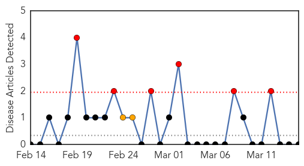

Measles
30-Day Web Trend
0 alerts, 0 warnings

30-Day Twitter Trend
0 alerts, 0 warnings

Article Locations

Article Confidences

Top Articles:
- 0.995
- Measles Outbreak to Hit USA, Canada & West Africa After Ebola Virus?
- 0.930
- Measles cases keep climbing
- 0.930
- Measles cases keep climbing
- 0.841
- Dana Hills High School
- 0.832
- A Shot at Explaining Vaccination
- 0.746
- 10 Top Facts About Measles Outbreaks Through the Years
- 0.590
- News for Denton County, Texas
- 0.528
- Pacific.scoop.co.nz UNICEF New Zealand launches Vanuatu emergency appeal
Top Tweets:
-
No tweets found for Mar 15, 2015
Mold/Fungal
30-Day Web Trend
6 alerts, 2 warnings

30-Day Twitter Trend
1 alerts, 0 warnings

Article Locations

Article Confidences

Top Articles:
-
No articles found for Mar 15, 2015
Top Tweets:
-
No tweets found for Mar 15, 2015